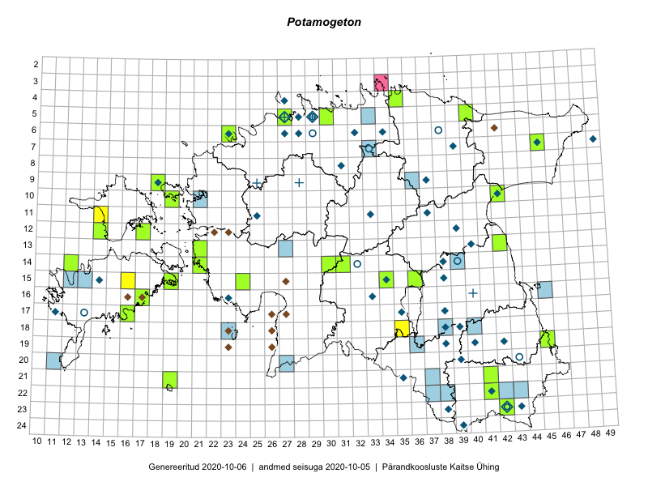

Potamogeton — penikeel
Potamogetonaceae :: Potamogeton (122)

Kaart põhineb 173 kirjel:
vaatlusi 11
herbaareksemplare 111
PKÜ kirjeid1 6
ELFi kirjeid2 45
Taime kaasaegsed ja ajaloolised leiukohad asuvad 94 ruudus.
Tingmärgid ja ruutude arvud periooditi (U3 / V4 )
█ 2006–2020 (48/–)
◆/◇ 1971–2005 (48/0)
○ 1921–1970 (9/0)
+ kuni 1920 (5/0)
× hävinud (–/0)
? kaheldav (–/0)
| Ruut | Leidja(d) | Leiuaeg | Kirje |
|---|---|---|---|
| 06-27 | E. Kann, H. Krall | 1983-07-09 | ruut/ala: Potamogeton |
| 06-29 | H. Salasoo, J. Eplik | 1936-06–1938 | ruut/ala: Potamogeton |
| 09-18 | botaaniline ekspeditsioon ZBI | 1982-06-10–1982-06-18 | ruut/ala: Potamogeton |
| 17-11 | botaaniline ekspeditsioon ZBI | 1974-06-12 | ruut/ala: Potamogeton |
| 17-13 | B. Saarsoo | 1936–1938 | ruut/ala: Potamogeton |
| 17-35 | M. Kask, L. Viljasoo | 1983-06-16–1983-06-22 | ruut/ala: Potamogeton |
| 11-14 | Eeva-Maria Jeletsky, Tarmo Niitla | 2015-06-28 | ruut/ala: Potamogeton |
| 15-16 | Karin Kikas, Elle Rajandu | 2015-07-23 | ruut/ala: Potamogeton |
| 19-45 | Meeli Mesipuu, Thea Kull | 2015-08-19 | ruut/ala: Potamogeton |
| 18-35 | Helle Mäemets, Mare Leis | 2015-06-23–2015-06-24 | ruut/ala: Potamogeton |
| 19-45 | Meeli Mesipuu, Thea Kull | 2015-08-19 | ruut/ala: Potamogeton |
| 05-29 | E. Peikel | 1968-07-04 | TAM0026119: Potamogeton |
| 05-29 | E. Peikel | 1968-07-04 | TAM0026120: Potamogeton |
| 04-27 | Tõnu Ploompuu | 1995-07-08 | TALL C006785: Potamogeton |
| 06-23 | Tõnu Ploompuu | 1995-06-10 | TALL C006784: Potamogeton |
| 06-34 | Tõnu Ploompuu | 1991-08-04 | TALL C006779: Potamogeton |
| 16-40 | P. Glehn | 1857-06-21 | TAM0115897: Potamogeton |
| 16-40 | P. Glehn | 1857-07-22 | TAM0115898: Potamogeton |
| 05-29 | G. Pahnsch | 1859 | TAM0115953: Potamogeton |
| 09-28 | G. Pahnsch | 1875-08-05 | TAM0115956: Potamogeton |
| 09-25 | G. Pahnsch | 1877-07-20 | TAM0115961: Potamogeton |
| 05-27 | G. Pahnsch | 1875-08-24 | TAM0115977: Potamogeton |
| 09-36 | Jana-Maria Habicht | 2015-07-07 | TAM0120021: Potamogeton |
| 19-45 | Toomas Kukk, Tiit Hallikma | 2016-06-17 | TAAdupl0136002: Potamogeton |
| 24-39 | Tiiu Trei | 2002-07-25 | TAA0118106: Potamogeton |
| 15-38 | Tiiu Trei | 2003-08-13 | TAA0118105: Potamogeton |
| 15-38 | Tiiu Trei | 2003-08-13 | TAA0118104: Potamogeton |
| 05-29 | Tiiu Trei | 2003-07-06 | TAA0116053: Potamogeton |
| 19-42 | Tiiu Trei | 1994-07-19 | TAA0116047: Potamogeton |
| 14-38 | Tiiu Trei | 1999-07-05 | TAA0116046: Potamogeton |
| 14-38 | Tiiu Trei | 1999-07-05 | TAA0116045: Potamogeton |
| 09-37 | Tiiu Trei | 1997-06-28 | TAA0118308: Potamogeton |
| 09-37 | Tiiu Trei | 1997-06-28 | TAA0118307: Potamogeton |
| 08-31 | Tiiu Trei | 1998-07-06 | TAA0118306: Potamogeton |
| 11-25 | Tiiu Trei | 1997-07-05 | TAA0118305: Potamogeton |
| 11-33 | Tiiu Trei | 1989-07-10 | TAA0118304: Potamogeton |
| 07-39 | Aime Mäemets | 1979-09-25 | TAA2000553: Potamogeton |
| 15-34 | Aime Mäemets | 1979-07-12 | TAA2000589: Potamogeton |
| 15-34 | Aime Mäemets | 1979-07-12 | TAA2000598: Potamogeton |
| 15-34 | Aime Mäemets | 1979-07-12 | TAA2000599: Potamogeton |
| 05-28 | Aime Mäemets | 1975-08-11 | TAA2000630: Potamogeton |
| 05-28 | Aime Mäemets | 1975-08-11 | TAA2000631: Potamogeton |
| 16-33 | Aime Mäemets | 1979-07-17 | TAA2000656: Potamogeton |
| 13-40 | Aime Mäemets | 1982-07-09 | TAA2000709: Potamogeton |
| 12-39 | Aime Mäemets | 1982-07-01 | TAA2000719: Potamogeton |
| 18-39 | Aime Mäemets | 1982-07-26 | TAA2000727: Potamogeton |
| 20-39 | Aime Mäemets | 1982-07-28 | TAA2000729: Potamogeton |
| 18-38 | Aime Mäemets | 1982-07-27 | TAA2000742: Potamogeton |
| 19-40 | Aime Mäemets | 1982-07-29 | TAA2000750.A: Potamogeton |
| 12-39 | Aime Mäemets | 1982-07-02 | TAA2000752.A: Potamogeton |
| 19-40 | Aime Mäemets | 1982-07-29 | TAA2000766: Potamogeton |
| 15-14 | Aime Mäemets | 1978-07-24 | TAA2001009: Potamogeton |
| 15-14 | Aime Mäemets | 1978-07-24 | TAA2001010: Potamogeton |
| 22-41 | Helle Mäemets | 1996-07-17 | TAA2001083: Potamogeton |
| 10-42 | Helle Mäemets | 1997-08-09 | TAA2001098: Potamogeton |
| 19-38 | Helle Mäemets | 1998-07-28 | TAA2001111: Potamogeton |
| 14-32 | Aime Mäemets | 1968-08-02 | TAA2001239: Potamogeton |
| 14-39 | Aime Mäemets | 1968-08-20 | TAA2001264: Potamogeton |
| 14-39 | Aime Mäemets | 1968-08-20 | TAA2001265: Potamogeton |
| 14-39 | Aime Mäemets | 1968-08-20 | TAA2001266: Potamogeton |
| 14-39 | Aime Mäemets | 1968-08-20 | TAA2001267: Potamogeton |
| 14-39 | Aime Mäemets | 1968-08-20 | TAA2001269: Potamogeton |
| 13-40 | Aime Mäemets | 1982-07-10 | TAA2001375.B: Potamogeton |
| 23-42 | Aime Mäemets | 1970-07-08 | TAA2001430.B: Potamogeton |
| 20-43 | Aime Mäemets | 1968-08-21 | TAA2001464: Potamogeton |
| 06-38 | Aime Mäemets | 1968-07-22 | TAA2001490: Potamogeton |
| 23-42 | Aime Mäemets | 1971-07-21 | TAA2001671.C: Potamogeton |
| 06-38 | Aime Mäemets | 1968-07-22 | TAA2001675: Potamogeton |
| 07-33 | Aime Mäemets | 1969-08-25 | TAA2001677: Potamogeton |
| 07-33 | Aime Mäemets | 1969-08-25 | TAA2001678: Potamogeton |
| 07-33 | Aime Mäemets | 1969-08-25 | TAA2001679: Potamogeton |
| 07-33 | Aime Mäemets | 1969-08-25 | TAA2001680: Potamogeton |
| 18-39 | Aime Mäemets | 1982-07-27 | TAA2001718: Potamogeton |
| 23-38 | Aime Mäemets | 1983-06-29 | TAA2001727: Potamogeton |
| 11-37 | Aime Mäemets | 1982-07-02 | TAA2001770: Potamogeton |
| 11-37 | Aime Mäemets | 1982-07-02 | TAA2001771: Potamogeton |
| 11-37 | Aime Mäemets | 1982-07-02 | TAA2001772: Potamogeton |
| 07-49 | Aime Mäemets | 1980-09-10 | TAA2001774: Potamogeton |
| 07-49 | Aime Mäemets | 1980-09-09 | TAA2001775: Potamogeton |
| 07-49 | Aime Mäemets | 1980-09-10 | TAA2001777: Potamogeton |
| 07-49 | Aime Mäemets | 1980-09-10 | TAA2001779: Potamogeton |
| 07-45 | Helle Mäemets | 2001-07-12 | TAA2001826: Potamogeton |
| 07-39 | Aime Mäemets | 1988-07-03 | TAA2001976: Potamogeton |
| 16-23 | Aime Mäemets | 1977-07-08 | TAA2002122.B: Potamogeton |
| 17-38 | Aime Mäemets | 1977-08-05 | TAA2002338.B: Potamogeton |
| 21-35 | Aime Mäemets | 1974-07-20 | TAA2002368: Potamogeton |
| 21-35 | Aime Mäemets | 1981-07-16 | TAA2002654.D: Potamogeton |
| 06-32 | Aime Mäemets | 1990-06-18 | TAA2002731: Potamogeton |
| 06-28 | Aime Mäemets | 1990-06-21 | TAA2002817: Potamogeton |
| 07-45 | Helle Mäemets | 2006-07-27 | TAA2002957: Potamogeton |
| 22-41 | Helle Mäemets | 2006-07-03 | TAA2002979: Potamogeton |
| 05-27 | Neeme Mikelsaar | 1977-06-16 | TAA2003038.A: Potamogeton |
| 17-38 | Aime Mäemets | 1991-07-02 | TAA2003039: Potamogeton |
| 17-38 | Helle Mäemets | 2003-08-04 | TAA2003041: Potamogeton |
| 21-19 | Ott Luuk, Meeli Mesipuu | 2016-09-10 | TAA0147338: Potamogeton |
| 23-43 | Taavi Tuulik | 1980-07-09 | TAA2003490: Potamogeton |
| 15-34 | Helle Mäemets | 2008-07-09 | TAA2003574: Potamogeton |
| 05-30 | Thea Kull | 2019-09-05 | TAA0148115: Potamogeton |
| 15-24 | Indrek Tammekänd | 2019-08-28 | TAA0151750: Potamogeton |
| 15-24 | Indrek Tammekänd | 2019-08-28 | TAA0151751: Potamogeton |
| 15-24 | Indrek Tammekänd | 2019-08-28 | TAA0151752: Potamogeton |
| 21-41 | Indrek Tammekänd, Toomas Kukk | 2019-07-10 | TAA0151766: Potamogeton |
| 14-31 | Indrek Tammekänd, Eike Vunk | 2019-06-09 | TAA0151776: Potamogeton |
| 10-42 | Ott Luuk, Eerik Leibak | 2016-08-04 | TAA0152353: Potamogeton |
| 09-18 | Ott Luuk | 2019-09-17 | TAA0152373: Potamogeton |
| 09-18 | Ott Luuk | 2019-09-17 | TAA0152374: Potamogeton |
| 16-40 | Girgensohn | 1857-07-03 | TAM0115962: Potamogeton |
| 05-40 | Peedu Saar, Sander Laherand | 2016-07-28 | TAA0134010: Potamogeton |
| 12-14 | Sander Laherand | 2016-08-07 | TAA0135850: Potamogeton |
| 12-14 | Sander Laherand | 2016-08-07 | TAA0135847: Potamogeton |
| 12-17 | Sander Laherand, Nele Jõessar, Thea Kull | 2016-08-11 | TAA0135814: Potamogeton |
| 14-12 | Ott Luuk, Peedu Saar | 2016-10-07 | TAA0139066: Potamogeton |
| 16-17 | Ott Luuk, Peedu Saar | 2016-09-01 | TAA0139083: Potamogeton |
| 10-19 | Meeli Mesipuu, Ott Luuk | 2016-09-15 | TAA0144096: Potamogeton |
| 05-27 | Ott Luuk, Peedu Saar | 2019-09-02 | TAA0152225: Potamogeton |
| 14-30 | Ott Luuk, Eerik Leibak | 2019-08-28 | TAA0152236: Potamogeton |
| 06-23 | Ott Luuk | 2018-07-05 | TAA0152243: Potamogeton |
| 06-23 | Ott Luuk | 2018-07-05 | TAA0152245: Potamogeton |
| 15-19 | Ott Luuk | 2018-06-28 | TAA0152248: Potamogeton |
| 17-16 | Ott Luuk | 2016-08-30 | TAA0152268: Potamogeton |
| 13-21 | Toomas Kukk, Ott Luuk, Thea Kull | 2019-06-25 | TAA0152593: Potamogeton |
| 14-21 | Ott Luuk | 2015-07-16 | TAA0152535: Potamogeton |
| 06-42 | Eerik Leibak | 1995-07-03 | ELF: 5984 |
| 16-17 | Ülle Püttsepp, Eerik Leibak, Lauri Lutsar | 1997-06-06 | ELF: 97 |
| 18-26 | Marika Kose | 1994-06-08 | ELF: 1582 |
| 17-26;17-27 | Marika Kose | 1994-06-08 | ELF: 1429 |
| 18-26;19-26 | Marika Kose | 1994-06-08 | ELF: 1493 |
| 22-42 | Kai Koppel | 2009-08-23 | ELF: 11411 |
| 22-37 | Karin Kikas | 2009-10-11 | ELF: 11817 |
| 22-37 | Karin Kikas, Martti Rohusaar | 2009-10-01 | ELF: 11826 |
| 22-37 | Karin Kikas | 2009-09-20 | ELF: 11848 |
| 22-37 | Karin Kikas | 2009-10-18 | ELF: 11850 |
| 22-38 | Karin Kikas, Martti Rohusaar | 2009-09-26 | ELF: 11898 |
| 22-38 | Karin Kikas, Martti Rohusaar | 2009-08-25 | ELF: 10051 |
| 22-38 | Karin Kikas, Martti Rohusaar | 2009-10-06 | ELF: 10081 |
| 18-40 | Kairi Sepp, Sille Tammik | 2010-07-08 | ELF: 504 |
| 22-42;23-42 | Merit Mandel | 2010-06-18 | ELF: 14463 |
| 18-40 | Kairi Sepp, Sille Tammik | 2010-07-02 | ELF: 14851 |
| 18-40 | Kairi Sepp, Sille Tammik | 2010-07-14 | ELF: 14907 |
| 18-40 | Kairi Sepp, Sille Tammik | 2010-07-15 | ELF: 14925 |
| 20-11 | Eerik Leibak | 2010-08-16 | ELF: 16847 |
| 09-36 | Jaan Spiegel | 2010-08-29 | ELF: 17566 |
| 11-14 | Ülo Väli | 2010-08-05 | ELF: 17796 |
| 10-21 | Tõnu Ploompuu | 2010-08-20 | ELF: 17860 |
| 18-35 | Alar Soppe | 2010-07-14 | ELF: 18021 |
| 18-35 | Alar Soppe | 2010-07-16 | ELF: 18055 |
| 19-36 | Peedu Saar | 2010-08-28 | ELF: 18079 |
| 19-36 | Peedu Saar | 2010-09-04 | ELF: 18091 |
| 23-42 | Meelis Sepp | 2010-07-14 | ELF: 18447 |
| 09-36 | Indrek Hiiesalu | 2010-08-28 | ELF: 18845 |
| 07-33 | Indrek Hiiesalu | 2010-07-23 | ELF: 18879 |
| 13-27 | Karin Kikas, Martti Rohusaar | 2010-10-30 | ELF: 19021 |
| 16-45 | Ott Luuk, Peedu Saar | 2010-08-24 | ELF: 2630 |
| 22-42;22-43 | Kai Koppel, Jaana Luik | 2010-07-28 | ELF: 2385 |
| 05-33 | Peedu Saar | 2010-08-23 | ELF: 18134 |
| 22-42 | Kai Koppel, Jaana Luik | 2010-07-12 | ELF: 20024 |
| 22-42 | Kai Koppel, Jaana Luik | 2010-07-13 | ELF: 20030 |
| 22-42 | Kai Koppel | 2010-07-23 | ELF: 20062 |
| 22-43 | Kai Koppel, Jaana Luik | 2010-07-29 | ELF: 20076 |
| 15-12;15-13 | Raul Melsas | 2010-08-10 | ELF: 20981 |
| 15-12 | Raul Melsas | 2010-08-10 | ELF: 20986 |
| 15-13 | Raul Melsas | 2010-08-16 | ELF: 20991 |
| 18-23 | Marika Kose, Ülle Valgi | 2010-10-23 | ELF: 21620 |
| 18-23 | Marika Kose, Ülle Valgi | 2010-10-23 | ELF: 21621 |
| 18-38 | Eerik Leibak | 2011-08-26 | ELF: 23206 |
| 21-37 | Eerik Leibak | 2012-06-20 | ELF: 23775 |
| 14-39 | Peedu Saar | 2012-07-29 | ELF: 439 |
| 12-23 | 2005-06-14 | PKÜ: 12213 | |
| 03-34 | 2011-09-16 | PKÜ: 17300 | |
| 15-27 | 2000-08-05 | PKÜ: 3395 | |
| 16-16 | 2003-08-25 | PKÜ: 11654 | |
| 18-23;19-23 | 1999-07-24 | PKÜ: 1831 | |
| 12-22;12-23 | 2005-06-16 | PKÜ: 12248 |
Pärandkoosluste Kaitse Ühingu (PKÜ) andmebaas sisaldab inventeeritud koosluste kirjeldusi ja liigiloendeid. Kõige enam on andmeid niidutaimede kohta.↩︎
Eestimaa Looduse Fondi (ELF) andmebaas sisaldab inventeeritud koosluste kirjeldusi ja liigiloendeid. Eriti rohkesti on andmeid märgalade kohta.↩︎
Ruutude arv uue atlase andmekogu järgi. Muuhulgas arvestab vanemat herbaariumi, 2005. aasta atlase välitöölehtedelt uuesti digitaliseeritud andmeid jne. Uue atlase andmekogust pärinevad andmed on kaardile kantud siniste sümbolitega.↩︎
Ruutude arv 2005. aasta atlase (Kukk, T., Kull, T., Eesti taimede levikuatlas. Eesti Maaülikool, Põllumajandus- ja Keskkonnainstituut, Tartu, 2005) järgi. Andmeallikana on kasutatud levik.exe programmi, kus igas ruudus on registreeritud vaid uusim leid. Seetõttu on vanemate perioodide kohta andmed puudulikud. Kasutatud levik.exe andmestikus leidub mõningaid kõrvalekaldeid atlase trükis ilmunud versioonist, sagedamini tarnade ja käpaliste seas. Lisaks leidub selles andmestikus valik liike (peamiselt väheste leidudega tulnuktaimed), mille kaarte trükis ei avaldatud. Vana atlase andmed ruutudest, milles ei ole uue atlase andmekogus leide enne 2006. aastat, on kaardil esitatud punaste sümbolitega. Vana atlase andmetel hävinud ja kaheldavaid leiukohti pole hilisemate (taas)leidude põhjal korrigeeritud.↩︎